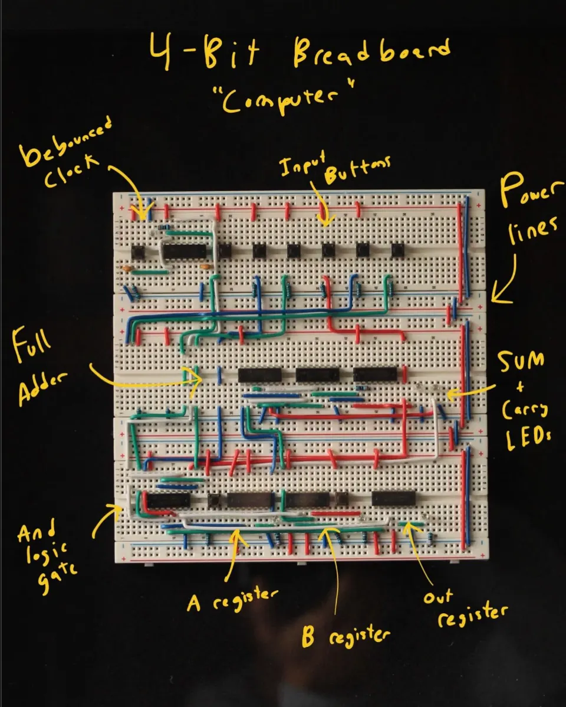
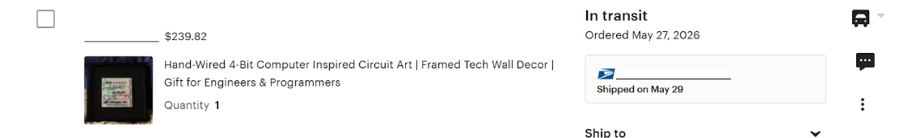
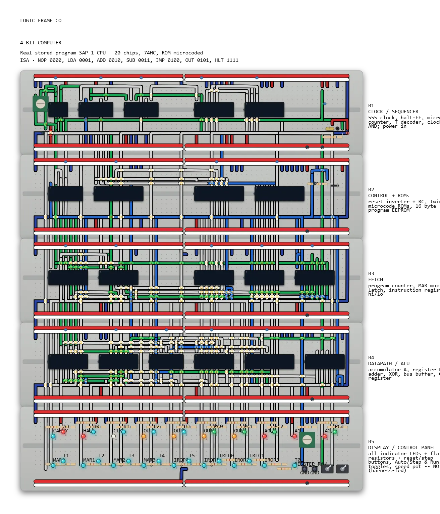

Physical Art for Tech Enthusiasts
I've had this idea for quite a while now. Inspired by a combination of retro and exposed tech aesthetics and the desire to learn and build computers from their most fundamental level, I came up with this piece.
I would build a 4-bit computer on a couple of breadboards, bending and shaping each wire by hand to reveal the complexity and beauty of this feat of engineering.
As I started learning about different parts of basic computers, I put together a couple of approximate representations for the MVP. Since computer engineering was new to me, I learned on the go, and while it wasn't functional yet, it served as the perfect MVP to test demand and marketability.

Hand-wiring the first one
I built it by hand with a soldering iron and helping hands, one connection at a time, as a 12×12″ framed piece, individually numbered, about five hours of work each. The point of this first version wasn't the electronics. It was nailing the object and the vision: does this look good enough to be wall art, and does anyone care?
Every photo on this page is that first unit, and it's a 4-bit-inspired display piece, not a working computer. It's wired to look the part, not to compute. That was deliberate: v1 existed to prove the product and the market, not to claim engineering it doesn't have.
The actually-functional build, with real verified logic, is what I'm working on now. It gets its own section below, and it won't ship a photo until it's real.
Instagram, Etsy, ads, and a DM that landed
I ran it like a real (very small) go-to-market test. An Instagram page for organic reach, an Etsy shop for actual checkout, a little paid spend, and some cold outreach to creators. The reach worked way better than I expected. One reel, "4 hours of wire bending," hit 113,745 views and pulled in 709 followers on its own.
Outreach that turned into a connection
I reached out to a bunch of creators and sent a free piece to @5amoljen. Packing it up became its own reel with 19,531 views, but the better part was that we actually connected. We talked about the work, he passed along some real career advice, and one free unit turned into a relationship worth more than any single sale.

Honestly, the Etsy side barely converted. A ton of people watched the videos but almost nobody actually bought one, and that stung a little. What it taught me was worth more than a few sales though. The demand for the content is clearly real, even if the demand for a $210 purchase isn't there yet. I got in front of thousands of the exact people this is made for, spent almost nothing, and did it before the real product even existed. That felt like the actual win. Now I just need something functional and dialed in to point all that attention at.
Now: build the real one, and a way to make them
The product and the demand are proven, so the real engineering starts here: an accurate, functional 4-bit computer, and the tooling to build these without five hours of hand-wiring apiece. This is where the project is actually headed.
Series 1 · a real 4-bit computer In progress
Not "inspired by" this time. This is the design for a working stored-program computer: a SAP-1 CPU built from about 20 74HC logic chips, microcoded with a pair of ROMs, running a real instruction set (LDA, ADD, SUB, JMP, OUT, HLT).

Where it goes from here
The real bottleneck is production. Most of those five hours is prepping wire: cutting, stripping, and bending every jumper to length. If this ever becomes more than a handful of orders, that's the part to automate, and a great excuse to learn manufacturing automation properly. The plan is staged, cheapest experiment first:
-
Research pass ✓ done
Studied existing DIY wire-bending builds, like an Arduino-driven wire bending machine, as a reference for a cut/strip/bend tool sized for breadboard jumper wire.
-
A wire cutter, stripper, and bender
A small automation tool to prep wire to length and shape. It's the single biggest chunk of what makes a build take five hours instead of one.
-
SO-ARM101 leader/follower experimentation
Teaching a low-cost leader/follower arm pair to place and route wire, to learn what's hard before committing to anything expensive.
-
A precision work cell
The long-term target: a gantry-based cell that can place and route with a precision hand-wiring can't match at volume.
And maybe, eventually, a real business out of it. But I'd rather build the tools, learn the manufacturing, and earn that than assume it.